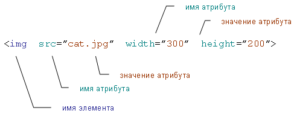
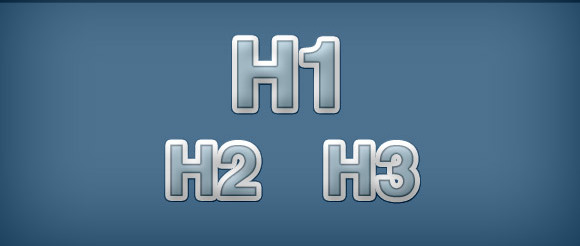

HTML (Hypertext Markup Language) - это код, который используется для структурирования и отображения веб-страницы и её контента. Например, контент может быть структурирован внутри множества параграфов, маркированных списков или с использованием изображений и таблиц данных. Как видно из названия, эта статья даст вам базовое понимание HTML и его функций.
HTML не является языком программирования; это язык разметки, и используется, чтобы сообщать вашему браузеру, как отображать веб-страницы, которые вы посещаете. Он может быть сложным или простым, в зависимости от того, как хочет веб-дизайнер. HTML состоит из ряда элементов, которые вы используете, чтобы вкладывать или оборачивать различные части контента, чтобы заставить контент отображаться или действовать определенным образом. Ограждающие теги могут сделать слово или изображение ссылкой на что-то еще, могут сделать слова курсивом, сделать шрифт больше или меньше и так далее. 
Давайте рассмотрим элемент абзаца более подробно.
Главными частями нашего элемента являются:
Элементы также могут иметь атрибуты, которые выглядят так:

Атрибуты содержат дополнительную информацию об элементе, которую вы не хотите показывать в фактическом контенте. В данном случае, class это имя атрибута, а editor-note это значение атрибута. Класс позволяет дать элементу идентификационное имя, которое может позже использоваться, чтобы обращаться к элементу с информацией о стиле и прочих вещах.
Пространство между ним и именем элемента (или предыдущим атрибутом, если элемент уже имеет один или несколько атрибутов).
Имя атрибута, за которым следует знак равенства. Значение атрибута, заключенное с двух сторон в кавычки.